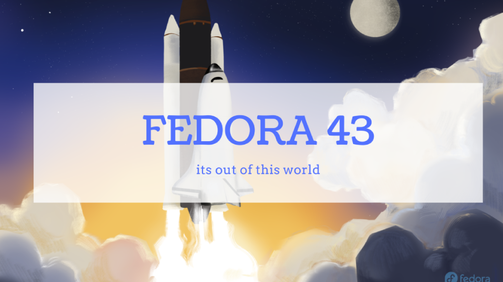

Fedora Linux for makerspaces
{kind=link}
Fedora is a modern and innovative, Linux-based operating system for desktops, laptops, servers, and cloud environments. The OS is free and consists primarily of cutting-edge, free, open-source components and software.
Developed by the Fedora Project, sponsored by Red Hat, Fedora is a free, open-source Linux operating system that is widely regarded as one of the most innovative and cutting-edge distributions available.
* Release Schedule:
- Standard Release: published every six months (usually in April and October).
- Support Life: approximately 13 months of updates
Info & downloads: visit fedoraproject.org.
Key STEM-advantages
Fedora is a versatile, open-source Linux distribution that aligns with the "Open, Free, and Accessible" philosophy of modern Makerspaces and FabLabs.
The combined use of Linux and open-source software facilitates 21st-century skills like critical thinking, problem-solving, collaboration and communication thanks to it's transparant and "hackable" environment.
* High performance and efficiency: cutting-edge integration of Linux kernel, GUI and software updates
* Modern hardware support and compatibility
* Zero-Cost Licensing: free to deploy across entire classrooms or labs
* Privacy & Security: adheres to enterprise-grade standards for data protection and privacy.
* Scalability: equally capable on a laptop, a server, or cloud environments
Install instructions
- Important: The following install instructions are for the Fedora 43 Workshop edition:
Basic installation step-by-step
- Download the latest Fedora Workstation release (ISO file)
- Create a bootable USB flash or HDD drive using an image writer.
- Suggested software: Balena Etcher (Linux, Mac OS and Windows) or Rufus (Windows)
- Restart your PC or laptop from the USB flash or HDD drive
- Follow the step-by-step on-screen instructions and setup for your needs
- A detailed instruction set, including screenshots, is provided by Fedora documentation
- Video tutorial: follow this excellent video guide by Learn Linux TV
Post-install tips
Some handy post-install tips which can significantely increase useability and comfort:
- Terminal commands: start your Terminal and enter the commands relevant for your use case.
* Update OS: sudo dnf upgrade (click 'yes' to update)
- Enable 3rd party repositories for free and non-free software packages:
** RPM Fusion repositories: sudo dnf install https://mirrors.rpmfusion.org/free/fedora/rpmfusion-free- release-$(rpm -E %fedora).noarch.rpm
sudo dnf install https://mirrors.rpmfusion.org/nonfree/fedora/rpmfusion-nonfree-release-$(rpm -E %fedora).noarch.rpm
** Terra repositories: sudo dnf install --nogpgcheck --repofrompath 'terra,https://repos.fyralabs.com/terra$releasever' terra-release
sudo dnf group upgrade core
sudo dnf4 group install core
* Enable non-free flatpak software packages in Software Center: flatpak remote-add --if-not-exists flathub https://dl.flathub.org/repo/flathub.flatpakrepo
flatpak remote-add --user --if-not-exists flathub https://flathub.org/repo/flathub.flatpakrepo
* Enable AppImage support: sudo dnf in fuse-libs
* Enable Media Codecs:
sudo dnf4 group install multimedia
sudo dnf swap 'ffmpeg-free' 'ffmpeg' --allowerasing
sudo dnf upgrade @multimedia --setopt="install_weak_deps=False" --exclude=PackageKit-gstreamer-plugin
sudo dnf group install -y sound-and-video
sudo dnf install libavcodec-freeworld
sudo dnf swap ffmpeg-free ffmpeg --allowerasing
* Enable H/W Video Decoding with VA-API: sudo dnf install ffmpeg-libs libva libva-utils
* Enable OpenH264 for Firefox browser:
sudo dnf install -y openh264 gstreamer1-plugin-openh264 mozilla-openh264
sudo dnf config-manager setopt fedora-cisco-openh264.enabled=1
For further tweaks and optimisation, follow this excellent guide by Devangshekhawat: Fedora Post Install Guide.
Useful links
Official Fedora flavors or 'Spins'
Fedora uses the Gnome desktop environment as its modern and user-friendly user interface. If you prefer using a different desktop environment such as KDE, Xfce, Cinnamon, etc., you can install an Fedora 'spin' or variant. Certain spins are also recommended when using older or low-powered devices.
A comprehensive overview can be found on www.fedoraproject.org/spins/

Click the image to explore the different Ubuntu variants.
Fedora-based Linux distributions
A number of popular Linux distributions are based on Fedora. These are developed by their own teams and offer their own desktop experience and highlights. Some of these are general purpose & gaming-focused, others are focused on the 'immutable' (Fedora Silverblue) aspect.
An overview of popular Fedora-based distributions:
- Nobara Project: nobaraproject.org
- Ultramarine Linux: ultramarine-linux.org
- Bazzite: bazzite.gg/
- Fedora Asahi Linux (Apple Silicon): asahilinux.org/fedora